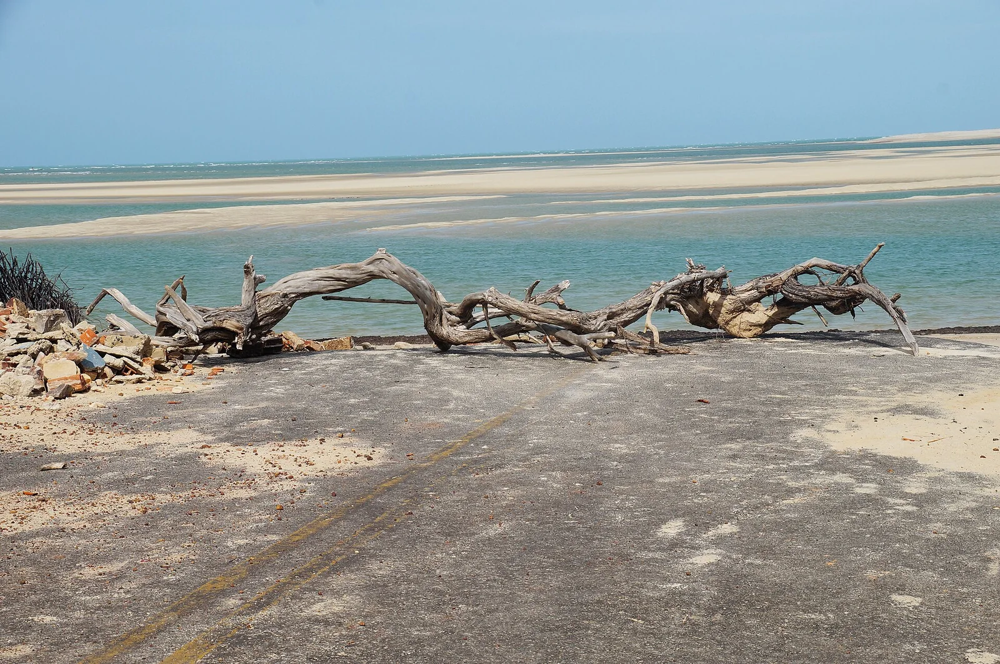

Barra Grande
Piauí, Brésil · kitesurf

Petit village de la côte du Piauí, entre le delta du Parnaíba et le Ceará, devenu un spot de kitesurf réputé. À marée basse, de grandes zones d’eau plate et peu profonde permettent d’apprendre sereinement.
- Lieu
- Piauí, Brésil
- Niveau
- Débutant
- Activités
- kitesurf
- Type d'eau
- Mer / océan
- Coordonnées
- -2.91, -41.41 (position approximative du secteur)
Dangers à connaître
- Fort marnage : courants de marée dans les chenaux.
- Raies possibles sur les fonds sableux : avance en traînant les pieds.
Le conseil d'Ocean Buddy
Consulte les horaires de marée : l’eau plate apparaît surtout à marée basse et les conditions changent vite quand la mer remonte.
Ouvrir dans Ocean Buddy Télécharger sur l'App Store
Source : Fiche Ocean Buddy · septembre 2026 · à vérifier localement.